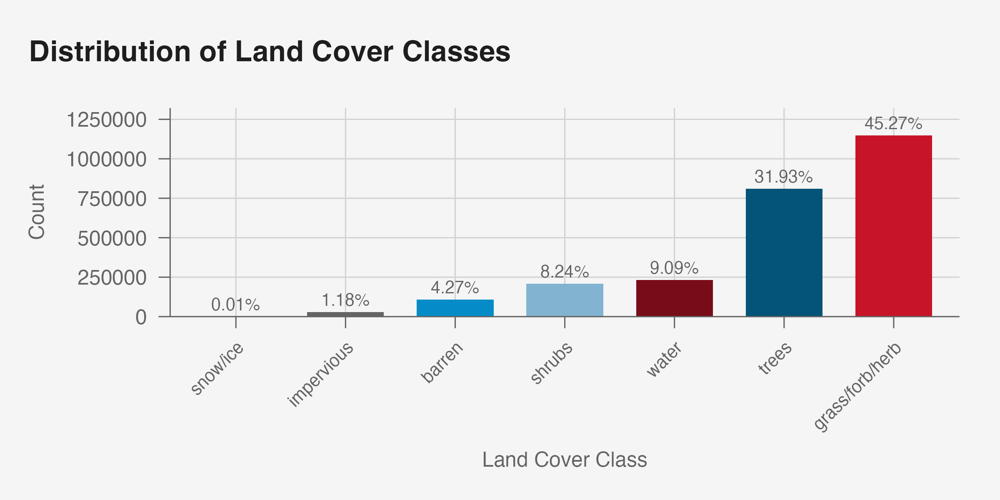
S&DS 425 Report: Landcover Classification
Abstract
Accurately classifying land cover types is essential for effective environmental monitoring and management, addressing critical issues such as climate change, deforestation, and urban expansion. This study utilizes satellite-derived data, including spectral bands and the Normalized Difference Vegetation Index (NDVI), alongside geographic and temporal information, to classify land cover across diverse regions in the United States. We employed a comparative analysis of three machine learning models: Multinomial Logistic Regression, Classification and Regression Trees (CART), and Random Forests (RF), to evaluate their effectiveness in handling complex, multi-class classification tasks characterized by significant class imbalances and overlapping spectral signatures. Through rigorous data exploration, including dimensionality reduction and visualization of spatial-temporal patterns, we informed the feature engineering process to enhance model performance. The Random Forest model emerged as the most robust, significantly outperforming the baseline logistic regression and initial CART models by achieving a macro-averaged F1-score of 0.812, balanced accuracy of 0.877, and better handling of underrepresented classes. Key predictors such as vegetation indicators, elevation, and NDVI were identified as highly influential in the classification process. The findings demonstrate the superiority of ensemble learning methods like Random Forests in land cover classification, offering reliable and actionable insights for environmental decision-making. This research underscores the importance of advanced modeling techniques in overcoming the challenges posed by heterogeneous and imbalanced datasets in remote sensing applications.
Introduction
Understanding and predicting changes in land cover and land use over time is critical for addressing pressing environmental challenges, such as climate change, deforestation, urbanization, and agricultural productivity. Remote sensing data, particularly from satellite imagery, provides a powerful tool for monitoring these changes over large geographic areas and long time periods. By leveraging satellite-derived spectral bands and vegetation indices, such as the Normalized Difference Vegetation Index, researchers can classify land cover types, assess their spatial-temporal dynamics, and derive actionable insights for decision-making in environmental management.
The motivation for this project arises from the need to integrate spatial and temporal dimensions into land cover modeling. While static models offer a snapshot of land cover at a single point in time, they fail to capture seasonal oscillations, inter-annual variability, and spatial dependencies inherent in natural systems. For example, vegetation exhibits predictable seasonal cycles that can be modeled using sinusoidal functions, revealing patterns in NDVI amplitude and frequency that correspond to land cover types. Additionally, nearby pixels often share similar characteristics due to ecological and geographic continuity, underscoring the importance of spatial relationships in classification models. These dynamics are not only scientifically interesting but also essential for improving the accuracy and interpretability of predictive models.
In this study, we evaluate and compare Multinomial Logistic Regression, Classification and Regression Trees, and Random Forests to determine the most effective approach for land cover classification, considering the complexities identified during data exploration.
The data used in this study includes satellite-derived spectral bands (from the Landsat collection) and associated geospatial features, such as NDVI, land cover labels, and pixel locations. Temporal attributes such as month and year provide the foundation for modeling seasonal and long-term trends, while spatial attributes enable the incorporation of neighborhood-level statistics. The data exploration phase revealed significant class imbalances and collinearity among spectral bands, informing the feature engineering steps such as Principal Component Analysis to reduce dimensionality and enhance model performance.
This paper is organized as follows: Section 2 provides an overview of the data, including exploratory analysis and visualizations that highlight key relationships and patterns. Section 3 describes the modeling approaches, including both regression and classification methods, with a focus on integrating temporal features into the predictive framework. It then discusses the visualization and interpretation of the results, comparing model performance and interpretability across approaches. Finally, Section 4 presents conclusions, recommendations, and ideas for future research directions, emphasizing the potential of random forest models for advancing land cover studies. By systematically exploring these dimensions, this project aims to contribute to a deeper understanding of land cover dynamics and their applications in environmental monitoring and management.
Data Exploration and Visualization
To develop an effective predictive framework for land cover classification, a detailed exploration of the dataset is essential. This section investigates key characteristics of the data, examines relationships between predictors and the outcome variable, and provides visual evidence to support modeling assumptions. Through descriptive statistics and visualizations, we aim to justify the choice of features, highlight relevant patterns, and assess the validity of the modeling approach.
Overview of the Dataset
The dataset comprises satellite-derived spectral bands (e.g., B1 through B7), the NDVI (Normalized Difference Vegetation Index), and metadata such as plot IDs, geographic coordinates (lat and lon), and temporal information (month and year). The primary outcome of interest is dominant_landcover, a categorical variable representing land cover classes. A review of the dataset variables follows:
PlotID: A unique identifier for each observation.MonthandYear: Categorical, temporal features indicating the month and year of the observation.SR_B1: A continuous measurement of the “blue” spectral band, which captures visible blue light and is sensitive to water bodies and atmospheric aerosols.SR_B2: A continuous measurement of the “green” spectral band, which captures visible green light and is sensitive to vegetation health and possibly land-water boundaries.SR_B3: A continuous measurement of the “red” spectral band, which captures visible red light and is usually used to capture chlorophyll absorption in vegetation.SR_B4: A continuous measurement of the “near-infrared” spectral band, which captures near-infrared light and is sensitive to vegetation density.SR_B5: A continuous measurement of the “shortwave infrared 1” spectral band, which captures shortwave infrared light and is sensitive to moisture content in soil and vegetation.SR_B7: A continuous measurement of the “shortwave infrared 2” spectral band, which captures shortwave infrared light and differentiates vegetation stress, soil properties, and geology.NDVI: A continuous measurement of the Normalized Difference Vegetation Index, which quantifies vegetation density and health based on the contrast between red and near-infrared light (effectively, a non-linear function ofSR_B3andSR_B4).LatandLon: The latitude and longitude coordinates of the pixel.Dominant_Landcover: A categorical outcome variable representing the dominant land cover class at the pixel level.Dominant_LandUse: A categorical outcome variable representing the dominant land use class at the pixel level.Season: A categorical variable for the season of observation.Veg: A binary variable indicating whether the pixel’s dominant landcover is vegetated (1 for “Grass/Forb/Herb”, “Shrubs”, and “Trees”) or non-vegetated (0 for “Snow/Ice”, “Impervious”, “Barren”, and “Water”).EastWest: A binary variable indicating whether the pixel is located east (1) or west (0) of the median longitude.NorthSouth: A binary indicating whether the pixel is located north (1) or south (0) of the median latitude.Elevation_meters: A continuous measurement of the elevation in meters above sea level at the pixel location.
Exploration of Outcome
The distribution of land cover classes reveals substantial class imbalances, which will have important implications for the modeling process. The “Grass/Forb/Herb” class constitutes the majority, accounting for 45.27% of the observations, followed by the “Trees” class at 31.93%. Together, just these two classes dominate the dataset, representing over three-quarters of all observations. Their prevalence, nevertheless, is consistent with the ecological characteristics of United States.
In contrast, other land cover classes are significantly underrepresented. For instance, “Water” and “Shrubs” account for 9.09% and 8.24% of observations, respectively, while “Barren” and “Impervious” cover only 4.27% and 1.18%. The “Snow/Ice” class constitutes a mere 0.01% of observations, reflecting minimal spatial extent. This extreme imbalance suggests challenges for classification models, as underrepresented classes may be overshadowed during training, leading to biased predictions.
From a modeling perspective, class imbalance necessitates careful consideration of strategies to mitigate its effects. Techniques such as class weighting, oversampling of minority classes, or undersampling of dominant classes could be employed to ensure balanced representation during training. Furthermore, performance metrics beyond overall accuracy, such as the F1-score, precision-recall curves, and macro-averaged scores, will be considered to evaluate model performance more effectively across all classes.
Exploration of Predictors
Spectral Bands and NDVI:
Visualizing the spectral band and NDVI values across different land cover types reveals a potential relationship between the outcome and predictor. Below, a boxplot of NDVI across land cover classes illustrates this relationship:
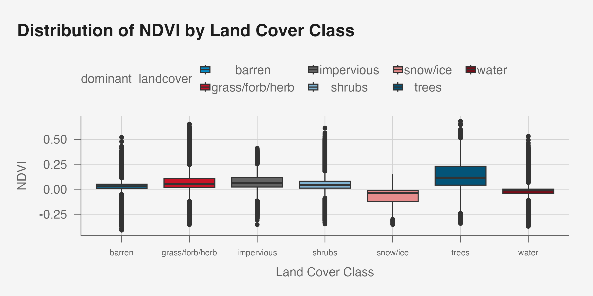
The distribution of NDVI values across land cover classes reveals both distinct patterns and notable overlaps that highlight the complexities of land cover classification. As shown in the boxplot visualization, classes such as “Trees” exhibit consistently higher NDVI values (though, with a relatively wide range), indicative of dense vegetation and strong photosynthetic activity. This aligns with ecological expectations, as tree canopies reflect substantial near-infrared light and absorb red light, resulting in high NDVI values. Conversely, classes like “Water” show consistently negative NDVI values, reflecting the spectral signature of water, which absorbs near-infrared light and reflects visible wavelengths.
However, certain classes, such as “Grass/Forb/Herb” and “Impervious,” demonstrate significant overlap in their NDVI distributions. This overlap may stem from seasonal variations in vegetation density or the heterogeneity of impervious surfaces, which can include both bare soil and constructed materials. Similarly, “Shrubs” and “Barren” exhibit NDVI ranges that overlap with both vegetative and non-vegetative classes, likely due to transitional or mixed land cover types.
This overlap underscores the need for advanced classification models that can handle complex, potentially non-linear relationships between predictors and outcomes. Random Forests and other ensemble methods, which are well-suited to datasets with overlapping class boundaries, are particularly promising. Additionally, incorporating supplementary predictors, such as spectral bands (e.g., B1-B7), temporal features (e.g., month and year), and spatial aggregates (e.g., mean NDVI of neighboring pixels), may further improve model performance by providing additional context for distinguishing between classes.
The variability within classes, as depicted by the interquartile ranges and outliers, also suggests the presence of heterogeneity within each land cover type. For example, the broader NDVI range for “Trees” may reflect differences in vegetation density, health, or canopy structure across regions. Similarly, the variability in “Grass/Forb/Herb” could be attributed to seasonal growth cycles or mixed vegetation types.
Ultimately, while NDVI provides meaningful separability for certain land cover classes, its limitations in distinguishing overlapping classes highlight the importance of multi-predictor models. This analysis justifies the use of advanced classifiers that integrate additional spectral, temporal, and spatial features to address the inherent complexity of land cover classification.
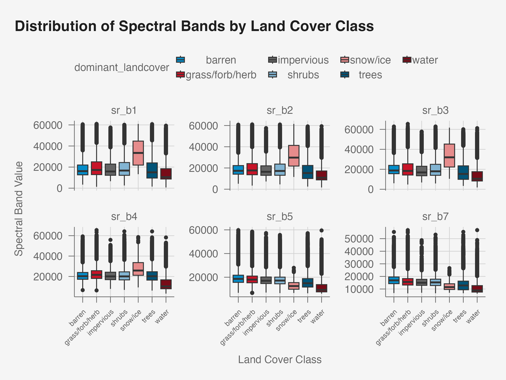
Similarly, these boxplots faceted by spectral bands across land cover classes reveal key patterns that inform the potential predictors’ utility for classification. For Bands 1, 2, and 3, which correspond to the visible blue, green, and red portions of the spectrum, the distribution of values remains relatively constant across the bands. This limited variability suggests strong collinearity among these bands—suggesting the need for dimensionality reduction techniques, such as Principal Component Analysis (PCA), to consolidate their information into fewer predictors without sacrificing interpretability.
For Bands 5 and 7, which capture reflectance in the shortwave infrared (SWIR) region, the distributions show a similar pattern of consistency across bands, though with slightly more variability compared to the visible bands. These bands are known to be sensitive to moisture content and soil properties, which may provide complementary information to indices like NDVI. However, the moderate to strong inter-correlation observed between these bands also highlights the potential redundancy in their spectral information. As a result, selecting the most informative band or combining them into derived indices may enhance the model.
No single band provides clear separability between all land cover classes, as evidenced by the substantial overlap in their distributions. For example, vegetative classes such as “Shrubs,” “Grass/Forb/Herb,” and “Trees” share overlapping ranges across multiple bands, reflecting the shared spectral characteristics of these land cover types. This overlap suggests that relying on any single spectral band as a predictor is insufficient for robust land cover classification.
Temporal Features:
The dataset includes monthly and yearly observations, enabling an analysis of seasonal oscillations and inter-annual trends. Below, we visualize temporal variations using time-series plots:
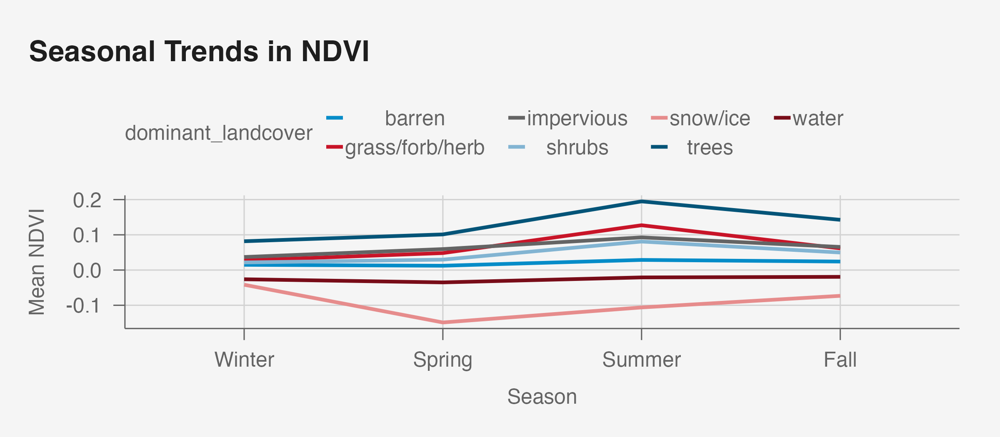
The visualization of seasonal NDVI trends across land cover classes reveals distinct temporal patterns that align with ecological expectations. As shown in the time-series plot, land cover types such as “Trees”, “Grass/Forb/Herb”, and “Shrubs” exhibit clear seasonal peaks during the summer months (June to August), corresponding to periods of maximum photosynthetic activity and vegetation growth. The NDVI for these classes declines during the winter months (October to February), reflecting the dormancy or reduced vegetation cover typical of temperate climates.
“Snow/Ice”, on the other hand, shows a very prominent decline in NDVI in the late-Winter and Spring months (February to June), likely due to the melting of snow and ice, which reduces the reflectance in near-infrared bands. Conversely, “Water” maintains relatively stable NDVI values throughout the year, consistent with its spectral signature that is less influenced by seasonal changes. Classes like “Barren” and, albeit to a limited extent, “Impervious” also show minimal seasonal variation, as these land cover types are largely non-vegetative and therefore less responsive to seasonal shifts.
The overlap in seasonal NDVI patterns for certain classes (such as “Grass/Forb/Herb”, “Impervious”, and “Shrubs”) underscores the importance of incorporating temporal features into the classification framework. These temporal dynamics can be modeled using sinusoidal functions, where NDVI is represented as a combination of sine and cosine terms to capture periodic oscillations. For example: \(\text{NDVI}(t) = A \cdot sin(2\pi \cdot f \cdot t + \phi) + B \cdot cos(2\pi \cdot f \cdot t + \phi)\), where \(A\) and \(B\) are the amplitudes, \(f\) is the frequency (e.g., one cycle per year), \(t\) is time (month or a numerical mapping of season), and \(\phi\) is the phase shift. These derived features, such as amplitude and phase, can serve as additional predictors in classification models.
The seasonal trends also highlight the need for models that account for temporal dependencies. Incorporating features like month or Fourier-derived seasonal components into machine learning classifiers can improve their ability to distinguish between classes with overlapping NDVI ranges. For example, while “Grass/Forb/Herb” and “Shrubs” may have similar NDVI distributions at specific times of the year, their seasonal trajectories clearly differ, providing an additional dimension for separation.
Overall, the observed periodic patterns in NDVI justify the inclusion of temporal features in the modeling framework. These features not only enhance the interpretability of the models but also provide a biologically meaningful basis for improving classification accuracy.
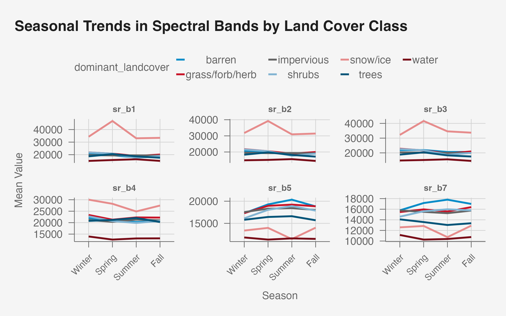
We extend this analysis to the spectral bands. The seasonal trends in spectral bands across land cover classes reveal similar periodicity, particularly in the “Snow/Ice” class, which exhibits distinct seasonal variations across all bands. This behavior is most pronounced in bands 1, 2, and 3 (visible spectrum), where reflectance values peak in the Spring, likely due to snow and ice melt influencing surface properties. The similarity in trends across these bands reinforces their shared sensitivity to visible light, suggesting they capture redundant information.
Shortwave infrared bands 5 and 7 display more nuanced seasonal trends, particularly for “Trees” and “Barren.” These classes show clear increases in reflectance during summer, for “Trees” aligning with the seasonal growth of vegetation and moisture-related changes that SWIR bands are sensitive to. Notably, the “Impervious” class remains relatively stable across all seasons in these bands, reflecting the consistency of its surface properties. The overall variability in Band 4 is less pronounced compared to Bands 5 and 7, which suggests SWIR bands may provide additional discriminative power for land cover classes with more prominent moisture or structural changes.
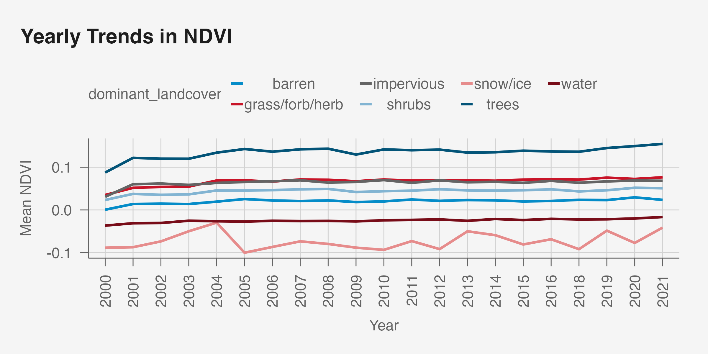
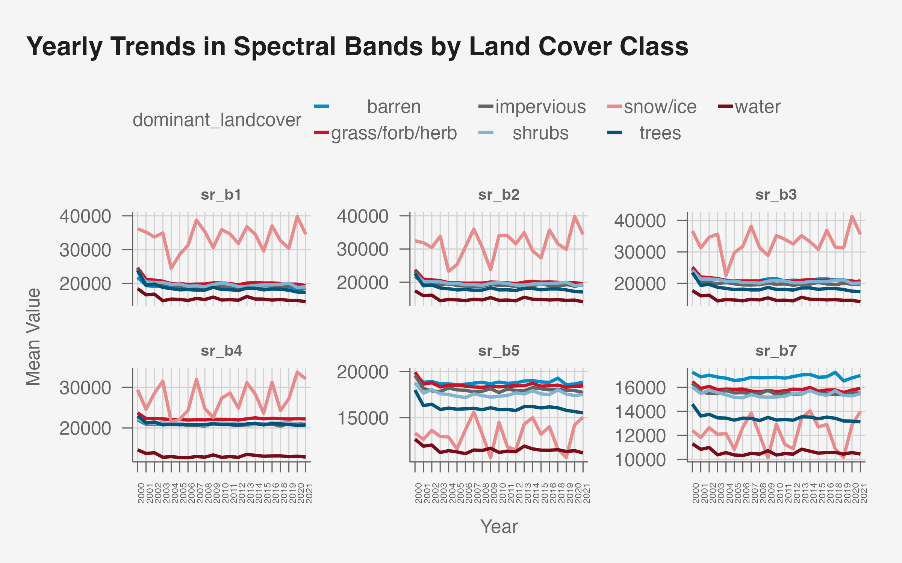
The analysis of yearly NDVI trends provides valuable insights into the stability and variability of vegetation dynamics across different land cover classes from 2000 to 2021 (the time range we focus on). The “Trees” class demonstrates consistently high NDVI values throughout the period, with a slight upward trend in recent years. This stability reflects the resilience of forested areas within the dataset and suggests minimal deforestation or even reforestation in some regions. Similarly, the “Grass/Forb/Herb” and “Shrubs” classes exhibit relatively stable NDVI values with limited inter-annual variability, indicative of consistent vegetation cover. These trends highlight the long-term stability of these vegetative land cover types, which is critical for assessing ecosystem health and predicting land cover changes.
In contrast, the “Snow/Ice” class exhibits considerable variability in NDVI, particularly between 2002 and 2005. This fluctuation may be attributable to climatic factors such as variations in snow and ice coverage due to changing weather patterns or broader impacts of global warming. The unstable NDVI trend observed for this class aligns with the hypothesis of reduced snow and ice cover over time, signaling potential shifts in cryospheric dynamics that merit further investigation. Non-vegetative class “Barren” maintains consistently low NDVI values, reflecting their lack of vegetation and spectral characteristics. This stability over time indicates minimal changes in land use or surface conditions in areas dominated by barren land. The “Water” class similarly shows stable negative NDVI values near zero, confirming its spectral separability and consistency over the study period. Concerning is the nearly identical trends among “Impervious” and “Grass/Forb/Herb” which suggest distinguishing these classes will prove difficult.
The observed trends suggest that temporal features, such as year, may provide limited additional predictive power for classes like “Impervious” and “Grass/Forb/Herb,” given their relative stability. However, for classes like “Snow/Ice,” where inter-annual variability is more pronounced, temporal features may enhance the model’s ability to capture dynamic changes. Overall, this analysis underscores the potential of temporal trends in NDVI to provide meaningful insights into land cover changes while emphasizing the need for tailored modeling approaches that account for the unique characteristics of each land cover class.
The analysis of yearly spectral band trends aligns closely with the NDVI observations, particularly in the clear separability of the “Snow/Ice” and “Water” classes. “Snow/Ice” demonstrates pronounced periodicity across visible bands (B1, B2, B3), with reflectance peaks likely driven by seasonal variations in snow cover. The Water class, in contrast, maintains consistently low reflectance values across all bands, highlighting its distinct spectral signature.
For the remaining land cover classes, visible bands (B1, B2, B3) show limited variability, reaffirming their redundancy in distinguishing between vegetative and non-vegetative classes. However, Bands 5 (SWIR1) and 7 (SWIR2) provide more nuanced differences, particularly for classes like “Trees” and “Barren,” where seasonal and inter-annual changes are more evident.
Exploration of Spatial Patterns
Spatial Relationships:
The geographic proximity of pixels merits exploration of potential correlations between neighboring observations. A heatmap of NDVI values can highlight spatial continuity:
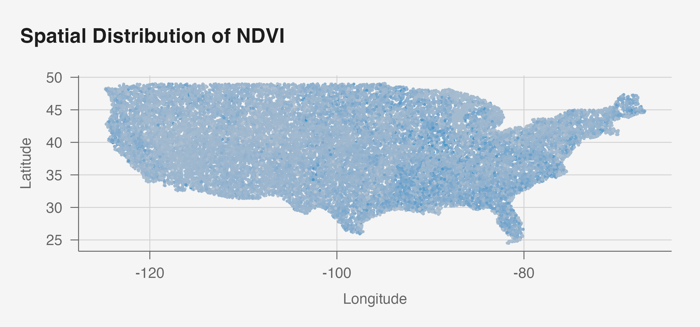
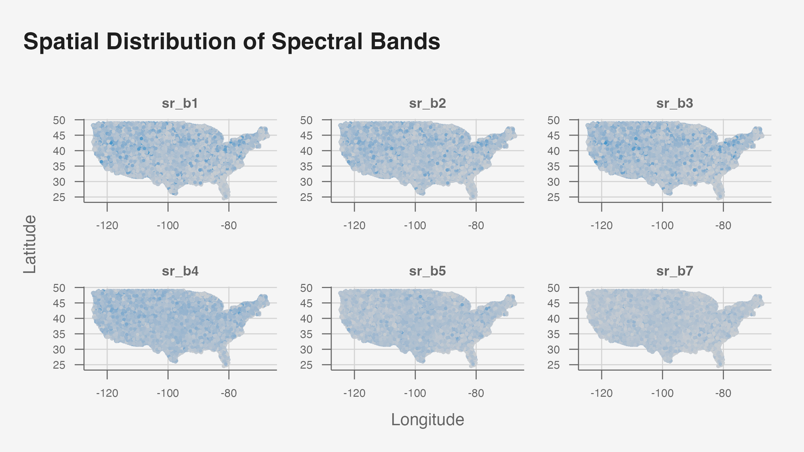
The visualization of NDVI and spectral band values across the United States highlights the spatial continuity of the predictors, where adjacent pixels exhibit similar values due to shared environmental and land cover characteristics.
High NDVI values, indicative of dense vegetation and robust photosynthetic activity, are concentrated in the eastern U.S. and parts of the Pacific Northwest which are regions characterized by forested landscapes and favorable climatic conditions that support high vegetation density.
In contrast, areas with low NDVI values are predominantly located in the arid western and southwestern United States. These regions, dominated by deserts, sparse vegetation, and barren land, naturally exhibit reduced photosynthetic activity. The stability and clustering of NDVI in these regions emphasize the potential for spatial correlations to enhance predictive modeling. For example, neighboring pixels are likely to belong to the same land cover class, providing an opportunity to use spatial aggregates such as the mean or variance of NDVI values within a defined neighborhood as additional predictors in classification models.
Furthermore, the spatial clustering observed in the map suggests the importance of incorporating spatial relationships into the modeling framework. By considering the influence of nearby pixels, the model may better capture the continuity and heterogeneity inherent in natural landscapes. For instance, spatial smoothing or feature engineering techniques that aggregate NDVI values across a local neighborhood can provide additional context for distinguishing between land cover types with similar spectral signatures.
This supports the hypothesis that spatial dependencies play a critical role in determining NDVI variability and, by extension, land cover classification.
Preliminary Correlation Analysis
A correlation matrix of predictors (e.g., spectral bands and NDVI) helps identify multicollinearity, which may impact model selection:
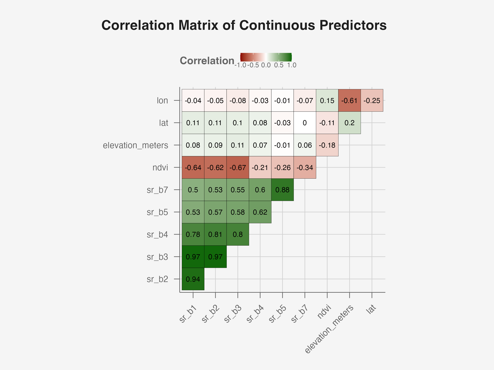
The correlation matrix provides insights into the relationships among the continuous variables, highlighting both redundancies and potential predictors for land cover classification.
While NDVI exhibits weak to moderate negative correlations with several spectral bands, these relationships highlight the inherent complexity of vegetation dynamics and the limitations of linear correlation measures. Specifically, NDVI demonstrates weak negative correlations with the near-infrared band SR_B4 (-0.21) and the shortwave infrared band SR_B5 (-0.26), aligning with the fact that NDVI is a non-linear function of red and near-infrared reflectance. The weak linear correlation underscores that the predictive power of these bands may lie not in their independent contributions but in their interactions, which may be more effectively captured through non-linear models.
The visible bands SR_B1, SR_B2, and SR_B3 exhibit near-perfect collinearity, with correlation coefficients exceeding 0.94. This strong interdependence indicates that these bands measure nearly identical surface properties in the visible spectrum, such as reflectance from bare soil, water, and vegetation—aligning with previously identified redundancies across the predictor categories. While these bands are critical for understanding vegetation absorption and reflection in the blue, green, and red ranges, their redundancy poses a risk of multicollinearity in predictive models. Without dimensionality reduction, their inclusion as independent predictors may lead to instability and overfitting.
Beyond the visible spectrum, the infrared bands SR_B4, SR_B5, and SR_B7 show moderate to strong inter-correlations, with values above 0.6 in some cases. These bands capture distinct but related properties, including vegetation structure, moisture content, and thermal properties. While their interdependence is not as pronounced as the visible bands, it suggests complementary information that could enhance classification models when used judiciously. In contrast, spatial variables such as latitude and longitude display negligible correlations with NDVI and other spectral predictors, indicating that geographic location alone may not strongly predict vegetation health. Elevation, similarly, shows weak correlations across all variables, suggesting it may have a limited direct impact on spectral properties in this dataset. However, spatial variables could still prove valuable in capturing non-linear regional trends or serving as inputs for spatial-temporal models.
The observed correlations provide critical guidance for feature engineering and model selection. The weak correlations between NDVI and individual spectral bands further reinforce the need to explore non-linear models, such as Random Forests, that can capture complex interactions. At the same time, the high collinearity among certain bands necessitates dimensionality reduction to mitigate redundancy and improve computational efficiency. Incorporating indices such as NDVI or enhanced vegetation indices may allow for a more nuanced representation of vegetation health, leveraging the interplay of spectral bands more effectively. While spatial and elevation variables appear weakly correlated with NDVI, they may still play an important role in explaining regional variations when combined with other predictors.
Section Conclusion
This exploratory analysis establishes the relationships between predictors and the outcome variable, supports the inclusion of temporal and spatial features, and provides insight into approaches for model selection. The next section will focus on modeling approaches, detailing the assumptions, methodology, and evaluation metrics used to predict land cover classes.
Modeling and Analysis
The objective of this section is to formalize and implement predictive models to classify land cover types using the predictors identified in the data exploration phase. The models we employ must address key challenges, including the complexity of spectral, temporal, and spatial relationships, overlapping class boundaries, and collinearity among predictors. This section details the regression and classification models tested, their assumptions, implementation, and evaluation.
Problem Setup
The task involves predicting the dominant land cover class (dominant_landcover), a categorical variable with multiple classes, using a set of continuous and categorical predictors. Specifically:
Observation (\(X\)): Each row corresponds to a unique satellite-derived observation at a specific time (
year,month) and geographic location (lat,lon).Predictors (columns of \(X\)): Continuous predictors include spectral bands (
SR_B1,SR_B2, …SR_B7),NDVI, elevation (elevation_meters), and spatial-temporal variables likemonth,year, andseason. Derived sinusoidal features (e.g., sine/cosine terms) will also be introduced during feature engineering.Outcome (\(y\)): The target variable is
dominant_landcover, representing land cover classes such as “Trees,” “Water,” “Snow/Ice,” etc.
Baseline Model: Multinomial Logistic Regression
Assumptions:
The multinomial logistic regression model assumes a linear relationship between the predictors and the log-odds of class membership. While this assumption simplifies interpretation, it imposes constraints that may not align with the inherent complexity of the land cover classification problem. Specifically, land cover classes often exhibit non-linear relationships, overlapping boundaries, and significant multicollinearity among predictors (e.g., spectral bands), which may reduce the model’s ability to generalize effectively. To mitigate multicollinearity, Principal Component Analysis (PCA) was employed to transform the highly correlated spectral bands into orthogonal components, thereby preserving the majority of variance while reducing redundancy and computational complexity.
Model Specification:
The multinomial logistic regression model predicts the probability of a pixel \(y\) belonging to a given land cover class \(C\), where \(c \in [1, K]\), as follows:
\[ P(y=c | X) = \frac{\exp(\beta_{c_0} + \beta^\top_{c}X)}{\sum_{k=1}^{K} \exp(\beta_{k_0} + \beta^\top_{k}X)} \]
where \(X\) represents the predictors (spectral bands, NDVI, temporal features), \(\beta_c\) is the vector of coefficients for class \(c\), and \(\beta_{c_0}\) is the intercept for class \(c\).
The model estimates \(\beta\) using maximum likelihood estimation to minimize the discrepancy between the predicted and observed probabilities.
Implementation:
The predictors used in the model include spectral bands (SR_B1 to SR_B7), NDVI, temporal features (season), elevation, vegetation indicators, and spatial features (EastWest and NorthSouth). However, due to the strong collinearity observed among the spectral bands (e.g., SR_B1, SR_B2, and SR_B3), dimensionality reduction is applied using PCA. PCA transforms the original spectral band features into orthogonal components, retaining the majority of the variance in the data while reducing redundancy and computational complexity.
Principal Component Analysis (PCA)

The scree plot of explained variance demonstrates that the first principal component (PC1) accounts for approximately 75% of the variance, while the second principal component (PC2) explains an additional 15%—together explaining over 90% of the total variance. Beyond PC2, the contribution of additional components (PC3 to PC6) is minimal, collectively explaining less than 10% of the variance, indicating that their inclusion offers limited additional information.
Given this pattern, we retain only PC1 and PC2 for downstream modeling, as they account for the vast majority of the variance in the spectral bands while significantly reducing dimensionality. Selecting only PC1 and PC2 simplifies the model and improves computational efficiency while maintaining the interpretability of the dominant trends in the spectral bands.
We proceed to fit the multinomial logistic regression model using PC1, PC2, NDVI, season, elevation_meters, veg, east_west, and north_south as predictors. We standardize the continuous predictors to have mean 0, standard deviation 1 to ensure that coefficients are on the same scale and interpretability is consistent across features.
Performance Evaluation:
Model performance is evaluated using accuracy, precision, recall, and F1-score.
\[ \begin{array}{|l|c|c|c|c|} \hline \textbf{Class} & \textbf{Precision} & \textbf{Recall} & \textbf{F1} & \textbf{Balanced Accuracy} \\ \hline \text{Barren} & 0.8534 & 0.9158 & 0.8835 & 0.9544 \\ \hline \text{Grass/Forb/Herb} & 0.6403 & 0.7816 & 0.7039 & 0.7091 \\ \hline \text{Impervious} & 0.4747 & 0.2310 & 0.3108 & 0.6140 \\ \hline \text{Shrubs} & 0.0561 & 0.0028 & 0.0052 & 0.4993 \\ \hline \text{Snow/Ice} & 0.4375 & 0.0308 & 0.0576 & 0.5154 \\ \hline \text{Trees} & 0.6425 & 0.5991 & 0.6200 & 0.7214 \\ \hline \text{Water} & 0.9057 & 0.9357 & 0.9205 & 0.9630 \\ \hline \textbf{Macro Averaged} & \textbf{0.5729} & \textbf{0.4995} & \textbf{0.5002} & \textbf{0.7109} \\ \hline \end{array} \]
The performance metrics for the multinomial logistic regression model demonstrate both strengths and limitations, reflecting variability in the model’s ability to classify different land cover classes. The model performs well for dominant classes such as “Grass/Forb/Herb,” “Trees,” and “Water,” achieving F1-scores of 0.704, 0.620, and 0.920, respectively. Notably, “Water” stands out as the best-performing class, with exceptionally high precision (0.906) and recall (0.936). This strong performance is likely attributable to the distinct spectral signature of water, which facilitates accurate classification. Similarly, the relatively high recall (0.782) and precision (0.640) for “Grass/Forb/Herb” indicate the model’s capability to capture prevalent vegetative classes.
In contrast, the model struggles significantly with minority and spectrally overlapping classes. For instance, the “Shrubs” class exhibits an F1-score of only 0.005, driven by extremely low recall (0.003) and precision (0.056). Likewise, the “Snow/Ice” class achieves an F1-score of 0.058, with a recall of 0.031, indicating that these classes are rarely identified correctly. These results highlight the challenges of classifying underrepresented categories, where insufficient training examples and overlapping spectral features hinder the model’s ability to generalize.
The “Impervious” class also performs poorly, with a recall of 0.231 and an F1-score of 0.311. This suggests difficulty in distinguishing impervious surfaces from similar classes, like “Grass/Forb/Herb” which we previously observed shared similar predictor distributions. The relatively low precision for this class (0.475) further underscores the model’s inability to effectively separate it from other categories.
Macro-averaged metrics, including an F1-score of 0.500 and balanced accuracy of 0.711, provide an overall assessment of model performance. While the balanced accuracy indicates moderate effectiveness across all classes, the macro-averaged F1-score reflects the challenges posed by poor performance on minority classes. The disparity between these metrics suggests that while the model is effective for majority and spectrally distinct classes, it fails to adequately address class imbalance and overlapping class distributions.
These results highlight the model’s strengths in classifying dominant, spectrally distinct classes and its weaknesses in handling overlapping class distributions and underrepresented categories.
Interpretation:
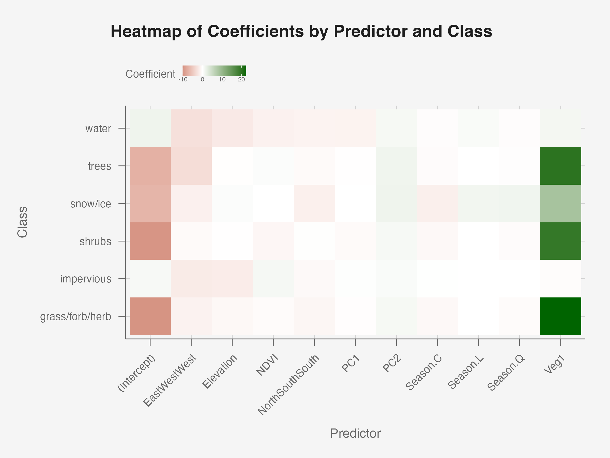
The heatmap of coefficients provides an empirical representation of the multinomial logistic regression model, offering insights into how each predictor influences the relative log-odds of classification into a specific land cover class. Each cell represents the coefficient for a predictor-class pair, where positive values indicate an increase in the log-odds of a pixel belonging to that class, while negative values denote a decrease relative to the reference category. Notably, the Vegetation Indicator (Veg:1) exhibits the largest positive coefficients across vegetated classes such as “Trees,” “Shrubs,” and “Grass/Forb/Herb”, compared to the non-vegetated reference category (Veg:0). This result aligns with observations from the data exploration phase, where vegetated classes consistently demonstrated high NDVI values and distinct spectral patterns indicative of healthy vegetation. Conversely, non-vegetated classes, including “Water,” “Snow/Ice,” and “Impervious,” display negligible or negative coefficients for Veg:1, reflecting their spectral dissimilarity from vegetated surfaces.
The intercept terms, particularly for “Grass/Forb/Herb” and “Trees,” are non-negligible and negative, suggesting higher baseline probabilities for these majority classes when all predictors are at their reference values. This observation reinforces the class distribution imbalance observed during the outcome exploration, where these vegetated classes accounted for over 75% of all observations.
The spatial predictors, EastWest and NorthSouth, reveal distinct trends. EastWest:West shows the largest negative coefficients for “Water” and “Trees”, indicating a reduced likelihood of these classes occurring in the western regions. Conversely, “Grass/Forb/Herb” and “Shrubs” display smaller negative coefficients, suggesting a more balanced east-west distribution for these classes. This trend aligns with geographic observations, where dense vegetation (trees) and water bodies are more prominent in the eastern United States. NorthSouth:South, on the other hand, exhibits negligible coefficients across most classes, with a modest negative value for “Snow/Ice”. This pattern is consistent with the climatological expectation that snow and ice are less likely to appear in southern regions closer to the equator, where temperatures are higher.
The NDVI coefficients highlight varying relevance across land cover types. NDVI is slightly positive for “Impervious” surfaces, likely reflecting bare soil or sparse vegetation associated with impervious areas. In contrast, NDVI is negative (albeit, minimally) for “Water” and “Shrubs”, consistent with their low or intermediate vegetation density, which was observed in the NDVI boxplots during data exploration. The negative relationship for “Water” reflects its distinct spectral signature, as water absorbs near-infrared light, resulting in consistently low NDVI values.
The principal components (PC1 and PC2) derived from spectral bands demonstrate subtle yet interpretable patterns. PC1 exhibits negligible coefficients across most classes, except for small negative values for “Shrubs” and “Water”. This result suggests that PC1 primarily captures spectral variations that do not contribute meaningfully to class separability. In contrast, PC2 displays small but positive coefficients across multiple classes, most prominently for “Trees” and “Snow/Ice”. This positive relationship may reflect spectral nuances captured in PC2 that are more aligned with vegetated and cryospheric surfaces. Notably, “Impervious” surfaces show near-zero coefficients for PC2, suggesting minimal spectral distinction along this principal component axis.
The seasonal predictors (Season:C, Season:L, Season:Q) exhibit small but meaningful coefficients that align with their polynomial contrasts, given the ordered nature of the seasons. In multinomial regression, ordered factors are modeled using orthogonal polynomials to capture linear, quadratic, and cubic trends. Season.C (linear trend) is slightly negative for “Snow/Ice”, reflecting a steady seasonal decline as winter transitions into warmer seasons. Season.L (quadratic trend) and Season.Q (cubic trend) coefficients are most noticeable and positive for “Snow/Ice”, indicating that the relationship between seasonality and snow cover is non-linear. This aligns with the earlier seasonal NDVI analysis, which revealed pronounced temporal peaks and troughs for “Snow/Ice”. For other classes, the seasonal predictors have minimal influence, reinforcing the earlier observation that the linear separability of temporal trends is limited.
The heatmap confirms and extends findings from the data exploration phase. The spatial predictors align with expected geographic distributions, particularly for “Water,” “Trees,” and “Snow/Ice”. NDVI and principal components reveal varying relevance, with NDVI strongly differentiating “Water” and “Impervious” surfaces, while PC2 captures subtle spectral distinctions for “Trees” and “Snow/Ice”. Seasonal predictors highlight the importance of non-linear trends, particularly for “Snow/Ice”.
Appropriateness:
The multinomial logistic regression model serves as a simple and interpretable baseline for land cover classification. Its linear assumptions make it less suitable for the inherent non-linear relationships and overlapping boundaries observed in the data, particularly among spectrally similar classes such as “Shrubs” and “Grass/Forb/Herb.” While PCA mitigated multicollinearity among spectral bands by reducing dimensionality, it abstracts raw spectral information, potentially limiting fine-grained class separability. Moreover, the model’s performance is heavily influenced by class imbalance, as evidenced by strong results for majority classes like “Water” and “Trees” but poor performance for underrepresented classes such as “Shrubs” and “Snow/Ice.” Thus, we may need a more flexible, non-linear models to handle the data’s complexity.
Nevertheless, a key strength of the multinomial logistic regression model is its interpretability. Coefficients provide clear insights into predictor effects: positive values increase the log-odds of class membership, while negative values decrease it. For instance, the Vegetation Indicator (Veg:1) strongly differentiates vegetated classes (“Trees,” “Grass/Forb/Herb”) from non-vegetated ones, aligning with NDVI trends observed during data exploration. Spatial predictors (EastWest and NorthSouth) capture meaningful geographic patterns, such as the higher prevalence of “Water” and “Trees” in eastern regions.
NDVI coefficients confirm its ecological relevance, with negative values for “Water” and slight positives for “Impervious,” consistent with their spectral signatures. Principal components (PC1, PC2) show subtle yet interpretable contributions, with PC2 capturing spectral variations for “Trees” and “Snow/Ice.” Seasonal predictors, modeled through polynomial contrasts, reveal non-linear temporal patterns, notably for “Snow/Ice,” which peaks in winter and declines thereafter.
While the results are interpretable and align with prior observations, the model’s linear constraints and limited handling of class imbalance reduce its effectiveness for minority and complex classes.
Temporal Model: Sinusoidal Multinomial Logistic Regression
Periodicity observed in NDVI and spectral bands indicates that temporal dynamics are not adequately captured by standard linear models. To address this, sinusoidal regression introduces sine and cosine components to model periodic oscillations, which align with seasonal trends and provide a continuous representation of time-varying effects.
Model Specification:
Sinusoidal regression expresses temporal patterns as a combination of sine and cosine functions, mathematically represented as:
\[ f(t) = A \cdot \sin(2 \pi f t + \phi) + B \cdot \cos(2 \pi ft + \phi) \]
Here:
- \(t\) represents the temporal variable (e.g., the numeric representation of
seasonormonth) - \(A\) and \(B\) are the amplitude coefficients, which are estimated during model training. These coefficients determine the magnitude of the oscillation and capture the contribution of the sine and cosine terms to the overall periodic pattern.
- \(f\) denotes the frequency of the oscillation, which corresponds to the natural periodicity of the phenomenon under study. For seasonal data divided into four quarters (Winter, Spring, Summer, Fall), \(f = \frac{1}{4}\), indicating one full cycle per year.
- \(\phi\) represents the phase shift, accounting for the starting point of the oscillation. Since the data aligns naturally with the seasons (e.g., starts in the Winter), we assume \(\phi\) to be 0 to simplify the model.
Thus, we extend the multinomial logistic regression model by incorporating sine and cosine transformations of the seasonal variable:
\[ P(y=c | X, t) = \frac{ \exp(\beta_{c_0} + \beta^\top_{c}X + \alpha_c \sin(2\pi ft) + \gamma_c \cos(2\pi ft)) } { \sum_{k=1}^{K} \exp(\beta_{k_0} + \beta^\top_{k}X + \alpha_k \sin(2\pi ft) + \gamma_k \cos(2\pi ft)) }, \]
where \(\alpha_c\) and \(\gamma_c\) represent the class-specific coefficients for the sine and cosine terms, respectively—quantifying how temporal periodicity influences the log-odds of classification into each land cover class.
Implementation:
Fourier Transformation

To account for this clear periodicity in NDVI, we performed a Fourier Transformation to identify the dominant frequency driving temporal oscillations. This step was motivated by the strong seasonal trends observed in the data, where NDVI peaks during the summer months and declines in winter, reflecting vegetation growth cycles. The Fourier Transformation decomposes the NDVI time series into its constituent frequencies, allowing us to quantify periodic patterns and determine the most significant frequency contributing to the observed variations.
The results of the Fourier Transformation analysis indicate that the dominant frequency corresponds to \(f=\frac{1}{12}\), representing a single annual cycle among the month predictor. This frequency accounts for the majority of the variance in NDVI, while higher-order frequencies have negligible contributions. This finding confirms that NDVI follows a regular, annual oscillatory pattern, which aligns with ecological expectations of seasonal vegetation changes.
To incorporate this seasonality into the multinomial regression model, we transformed the month variable (which is much more granular than season) into two sinusoidal features: \(\sin(2\pi \cdot f \cdot \text{month})\) and \(\cos(2\pi \cdot f \cdot \text{month})\). These sine and cosine terms capture the periodic nature of NDVI across months, providing a smooth representation of temporal trends. By including these derived features as predictors, the model may gain the ability to account for seasonal variations in a flexible yet interpretable manner, enhancing its capacity to distinguish between land cover classes with strong temporal signals, such as “Grass/Forb/Herb” and “Snow/Ice.”
Performance Evaluation and Interpretation:
As done previously, model performance is evaluated using accuracy, precision, recall, and F1-score. Given the substantially similar performance and coefficients, we extend our previous discussion of the multinomial logistic regression model and focus more on the utility of the Fourier-transformed month variable.
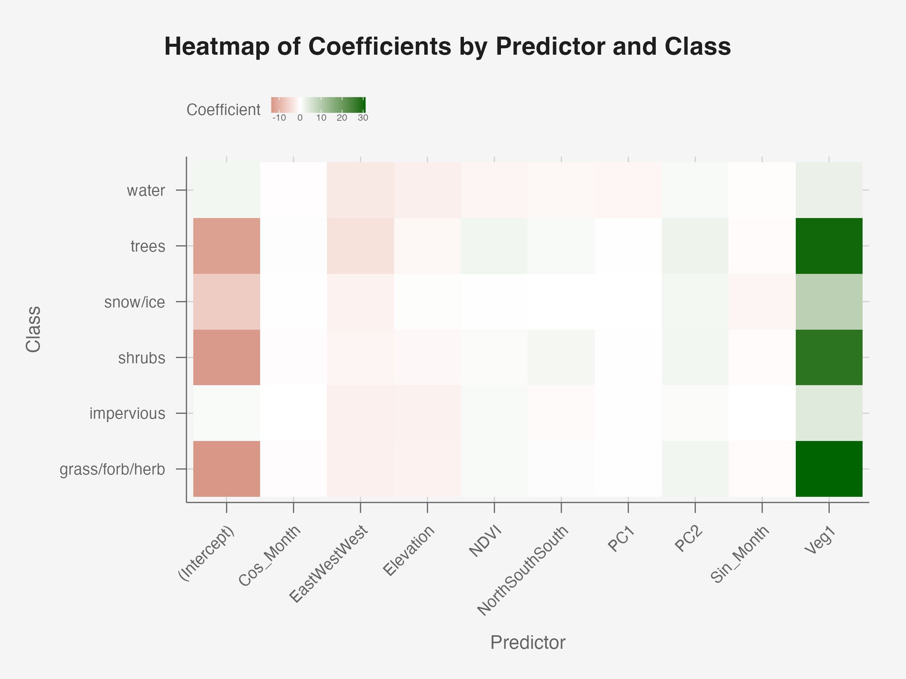
\[ \begin{array}{|l|c|c|c|c|} \hline \textbf{Class} & \textbf{Precision} & \textbf{Recall} & \textbf{F1} & \textbf{Balanced Accuracy} \\ \hline \text{Barren} & 0.8541 & 0.9160 & 0.8839 & 0.9545 \\ \hline \text{Grass/Forb/Herb} & 0.6403 & 0.7789 & 0.7029 & 0.7085 \\ \hline \text{Impervious} & 0.4729 & 0.2320 & 0.3112 & 0.6144 \\ \hline \text{Shrubs} & 0.0555 & 0.0027 & 0.0052 & 0.4993 \\ \hline \text{Snow/Ice} & 0.4706 & 0.0352 & 0.0656 & 0.5176 \\ \hline \text{Trees} & 0.6396 & 0.6003 & 0.6193 & 0.7208 \\ \hline \text{Water} & 0.9059 & 0.9357 & 0.9206 & 0.9630 \\ \hline \textbf{Macro Averaged} & \textbf{0.5770} & \textbf{0.5001} & \textbf{0.5012} & \textbf{0.7112} \\ \hline \end{array} \]
Incorporating sinusoidal transformations of the month variable, represented as sine and cosine terms, aimed to address the observed periodicity in the temporal predictors, particularly the cyclical pattern of NDVI over the calendar year. These periodic components, theoretically, enable the model to account for annual and seasonal temporal cycles, e.g., vegetation growth peaking during summer and snow cover during winter. Mathematically, the sine and cosine features capture temporal effects in a continuous manner without relying on categorical representations, thus aligning more closely with periodic phenomena in the data.
Performance evaluation of the sinusoidal multinomial regression model, however, reveals negligible improvements over the baseline multinomial logistic regression. Class-specific metrics such as precision, recall, and F1-score exhibit minimal or no meaningful gains, as demonstrated by the macro-averaged F1-score (0.5012) and balanced accuracy (0.7112), which remain nearly identical to the baseline results (0.5002 and 0.7109, respectively). Classes such as “Snow/Ice,” where stronger temporal signals were anticipated, show only marginal changes in predictive accuracy. While the sine term exhibits a weak negative coefficient for “Snow/Ice,” the cosine term remains near zero across all classes, indicating that these temporal features contribute minimally to class separation. This suggests that the seasonal patterns captured by the sinusoidal terms are insufficient to meaningfully enhance this model’s discriminatory power.
From an interpretability standpoint, the inclusion of sinusoidal features complicates the model without adding substantial value. While the baseline model relied on simpler, more interpretable predictors, the sinusoidal terms introduce an additional layer of complexity. The resulting coefficients for sin_month and cos_month are not intuitive to interpret, especially for non-technical stakeholders. Moreover, the near-zero influence of these coefficients further diminishes their utility, as they fail to capture meaningful temporal variability beyond what was already modeled by existing predictors like NDVI and season.
Thus, while the sinusoidal regression approach is—theoretically—well-suited for periodic data, its empirical performance in this case does not justify the added complexity. The marginal improvements in predictive metrics, coupled with reduced interpretability, suggest that simpler temporal representations such as categorical season remain sufficient for this dataset.
Non-Linear Models
While multinomial logistic regression serves as a baseline model for land cover classification, its performance is limited by the linearity assumption and its inability to model complex feature interactions. Given the inherently non-linear relationships present in remote sensing data, such as interactions between spectral bands, elevation, and seasonal patterns, a more flexible modeling approach is required.
CART (Classification and Regression Trees) Algorithm
Classification and Regression Trees (CART) constitute a fundamental machine learning technique employed for both classification and regression tasks. With respect to land cover classification, CART offers a straightforward yet potent approach to model complex, non-linear relationships between predictors and the target variable. The inherent simplicity and interpretability of CART make it an attractive option for environmental datasets, which (like here) often encompass a diverse array of continuous and categorical variables.
Assumptions:
CART models operate under minimal assumptions regarding the underlying data distribution, rendering them highly adaptable to various datasets. Specifically, CART does not presume any specific functional form for the relationship between predictors and the outcome variable. This flexibility allows CART to effectively capture non-linear interactions and relationships without necessitating extensive feature engineering. Additionally, CART exhibits robustness to outliers, as the tree-based structure can isolate anomalous data points, thereby mitigating their impact on the overall model performance.
Model Specification:
The CART algorithm constructs a decision tree by recursively partitioning the feature space to predict the class of the target variable. The process involves selecting the predictor and corresponding threshold at each node that minimizes an impurity measure, such as the Gini Index or Entropy. The tree growth continues until predefined stopping criteria are met, which may include a minimum number of samples per leaf, maximum tree depth, or a minimal improvement in impurity. Upon completion, each terminal node (leaf) is assigned the most frequent class among the training observations that fall into that node.
However, the utilization of a single decision tree in CART is susceptible to overfitting, particularly when the tree becomes excessively deep and begins to capture noise within the training data. To counteract this, pruning techniques are often employed to reduce tree complexity, thereby enhancing the model’s generalization capability by balancing bias and variance. Despite the potential for overfitting, the interpretability and computational efficiency of CART models remain significant advantages, as the decision rules are transparent and easily communicable to stakeholders.
Implementation:
Data Preparation
For this analysis, the dataset underwent meticulous preparation to ensure its suitability for CART modeling. Initially, observations were filtered to include only points within the United States, maintaining geographic consistency. Each observation was uniquely identified by PlotID to prevent duplication. Land cover classes (dominant_landcover) were encoded as categorical variables to facilitate classification tasks. Recognizing the inherent class imbalance within the dataset, particularly the underrepresentation of classes such as “Snow/Ice” and “Shrubs,” a stratified 70%-30% train-test split was employed. This stratification ensured that the training and testing subsets preserved the original class distribution, thereby providing a realistic evaluation of model performance.
Class imbalance poses a significant challenge in classification tasks, as minority classes are often overshadowed by majority classes, leading to biased model predictions. To mitigate this issue within the CART framework, oversampling techniques such as the Synthetic Minority Over-sampling Technique (SMOTE) were considered to augment the number of minority class samples in the training set. Additionally, undersampling of majority classes was explored to achieve a more balanced class distribution. These strategies aimed to enhance the model’s ability to accurately classify underrepresented classes by providing them with sufficient representation during training.
We visualize the dataset using the Google Earth Engine interface:
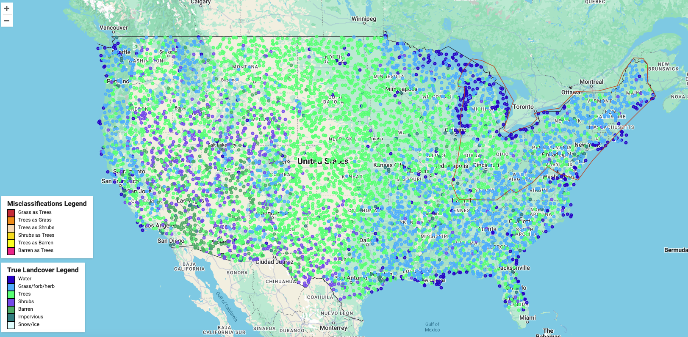
The CART model was trained on 70% of the dataset and tested on 30% of the dataset, using predictors: NDVI, SR_B1, SR_B2, SR_B3, SR_B4, SR_B5, SR_B7, elevation_meters (The full code is available here: here).
For instance, for 2018, the data sizes were as follows:
Total Observations: 24,411
Training Set: 16,942 observations
Testing Set: 7,469 observations
Performance Evaluation
The performance of the CART model was evaluated using multiple metrics to provide a comprehensive assessment of its effectiveness in classifying land cover types. The metrics employed include Accuracy, Precision, Recall (Sensitivity), F1-Score, and the Kappa Coefficient (\(\kappa\)). These metrics collectively offer insights into the model’s ability to correctly classify observations, the balance between precision and recall, and the agreement between predicted and observed classifications beyond chance.
The modeled yielded an accuracy of 55.3% and a \(\kappa\) coefficient of 0.304.
The classifier incorrectly classified 3339 observations (44.7% of the testing set). There were 30 unique misclassification types. The 6 classes with the highest misclassification frequency:
“Trees” classified as “Grass/Forb/Herb” (805)
“Grass/Forb/Herb” classified as “Trees” (745)
“Trees” classified as “Shrubs” (382)
“Shrubs” classified as “Trees” (322)
“Trees” classified as “Barren” (192)
“Barren” classified as “Trees” (153)
These misclassifications were styled dynamically by type and visualized on the map to explore any geospatial groupings. We see that “Trees” and “Grass/Forb/Herb” are often misclassified as one another along the Northeast, but “Grass/Forb/Herb” is incorrectly classified as “Trees” in the Midwest. This shows that the model struggles to distinguish between these two classes in certain regions, but especially where “Grass/Forb/Herb” is prevalent.
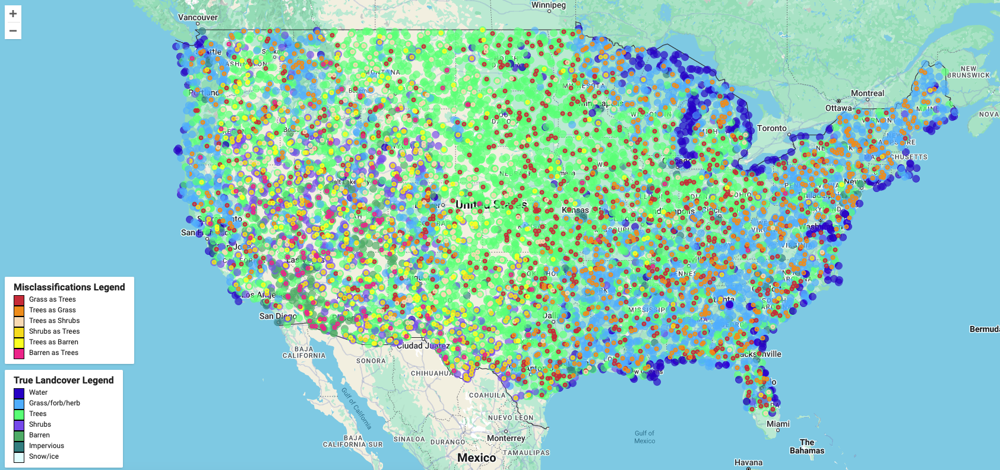
Given certain classes appeared to host disproportionate misclassifications (e.g., “Trees”), we explored misclassification rates, precision, and recall by class, shown in the table. First, misclassification rates were calculated as follows:
\[ \text{Misclassification Rate} = \frac{\text{Misclassified Points in Class}}{\text{Total Points in Class}}. \]
While all classes have moderate to high misclassification rates, “Snow/Ice”, “Impervious”, “Shrubs,” and “Barren” had significantly larger rates than other classes. The dispersion between rates is likely due to class imbalance in the training data, as certain classes were highly underrepresented relative to others, like “Snow/Ice” (2 observations) vs. “Grass/forb/herb” (8,825 observations).
Next, the two errors contributing to misclassification, predicting false positives and false negatives, were observed by calculating precision and recall. Precision by class measures the proportion of true positive predictions out of all positive predictions made by the model:
\[ \text{Precision} = \frac{\text{True Positives}}{\text{True Positives} + \text{False Positives}}. \]
Recall by class measures the proportion of true positive predictions out of all actual positive instances in the dataset:
\[ \text{Recall} = \frac{\text{True Positives}}{\text{True Positives} + \text{False Negatives}}. \]
When precision is less than recall for a given class, it suggests the model is overpredicting that class, resulting in many false positives. The table shows that “Water”, “Grass/Forb/Herb” and “Barren” are often incorrectly predicted for a certain point, which makes sense given their large representation in the training data. Conversely, when recall is less than precision, the model is underpredicting that class, resulting in many false negatives. For example, “Trees” and “Shrubs” are often missed by the model. Given these classes are not underrepresented in the training data, the model may be struggling to distinguish between them and other classes due to their similar spectral signatures.
\[ \begin{array}{|l|c|c|c|c|} \hline \textbf{Landcover Type} & \textbf{Misclassifications} & \textbf{Misclassification Rate} & \textbf{Precision} & \textbf{Recall} \\ \hline \text{Water} & 87 & 0.24 & 0.75 & 0.77 \\ \hline \text{Grass/forb/herb} & 935 & 0.44 & 0.55 & 0.56 \\ \hline \text{Trees} & 1502 & 0.38 & 0.65 & 0.62 \\ \hline \text{Shrubs} & 498 & 0.79 & 0.20 & 0.21 \\ \hline \text{Barren} & 226 & 0.69 & 0.25 & 0.30 \\ \hline \text{Impervious} & 90 & 0.93 & 0.06 & 0.07 \\ \hline \text{Snow/Ice} & 1 & 1.00 & 0.00 & 0.00 \\ \hline \end{array} \] A close examination of class-specific performance metrics reveals substantial variability across different land cover categories, underscoring the limitations of the CART approach in this context. Table 1 presents a detailed breakdown of the model’s performance across seven distinct land cover types. Notably, classes such as “Water,” “Grass/Forb/Herb,” and “Barren” exhibit higher precision and recall values compared to other classes. For instance, the “Water” class achieved a precision of 0.75 and a recall of 0.77, reflecting the model’s relative proficiency in correctly identifying water bodies. Similarly, “Grass/Forb/Herb” and “Barren” classes maintained moderate precision and recall scores of 0.55/0.56 and 0.25/0.30, respectively. These results are consistent with the high representation of these classes in the training dataset, enabling the CART model to leverage their abundant samples for more accurate predictions.
Conversely, the model struggled significantly with classes such as “Trees,” “Shrubs,” “Impervious,” and “Snow/Ice,” as evidenced by their low precision and recall scores. The “Trees” class, while not being a minority class, exhibited a precision of 0.65 and a recall of 0.62, indicating a propensity to misclassify tree-covered areas as “Grass/Forb/Herb” or “Shrubs.” The “Shrubs” and “Snow/Ice” classes demonstrated particularly poor performance, with both precision and recall values hovering around 0.20 and even 0.00, respectively. These low metrics suggest that the CART model frequently misclassifies these classes, either by overpredicting them as other categories or by failing to recognize them altogether.
The observed discrepancies in precision and recall across classes may be attributed to several factors. Firstly, the pronounced class imbalance within the dataset, where classes like “Grass/Forb/Herb” dominate with 8,825 observations compared to the sparsely represented “Snow/Ice” class with only 2 observations, inherently biases the model towards majority classes. This imbalance leads to overprediction of well-represented classes, as the model leverages their abundance to minimize overall error, inadvertently neglecting minority classes. Secondly, the spectral similarities between certain land cover types, such as “Trees” and “Grass/Forb/Herb,” exacerbate the model’s difficulty in distinguishing between these categories. The overlapping spectral signatures result in ambiguous feature spaces where CART’s binary splitting strategy becomes less effective in delineating clear decision boundaries.
Moreover, the high misclassification rates for minority classes, particularly “Shrubs” and “Snow/Ice,” highlight the model’s inability to capture the nuanced spectral and spatial characteristics necessary for accurate classification. The CART algorithm’s susceptibility to overfitting further compounds these issues, as deep trees may capture noise and specific patterns in the training data that do not generalize well to unseen data, leading to poor performance on underrepresented classes.
CART II
To deepen our analysis and address the limitations observed in the initial CART model, we developed a secondary CART classifier tailored specifically for the state of New York. This targeted approach was necessitated by the substantial computational resources required to process extensive satellite datasets. By concentrating our efforts on a geographically confined area, we aimed to optimize both computational efficiency and model performance.
Geospatial Data Partitioning
We defined a rectangular region encompassing New York and extended it outward by a 60-kilometer buffer to form a “doughnut” buffer zone. This spatial configuration facilitated a clear separation between training and testing datasets, enhancing the robustness of our evaluation. Specifically, observations located within the central rectangle were designated as training data, while those within the surrounding doughnut buffer served as the testing dataset. This method ensured that the model was trained on a representative sample of the region while being rigorously tested on geographically distinct points, thereby mitigating potential spatial autocorrelation biases. (See full code here).
A Landsat 8 composite image is generated for the region, and predictor bands (B1–B7) are sampled at training points to train a CART classifier. The classifier is then applied to the composite image to produce a classified landcover map. The classification results are validated using test points, and a confusion matrix is computed to evaluate performance, including overall accuracy and the Kappa coefficient. Misclassified points, identified by comparing predicted values (classification) to true values (landcover), are highlighted in red and displayed on the following map:
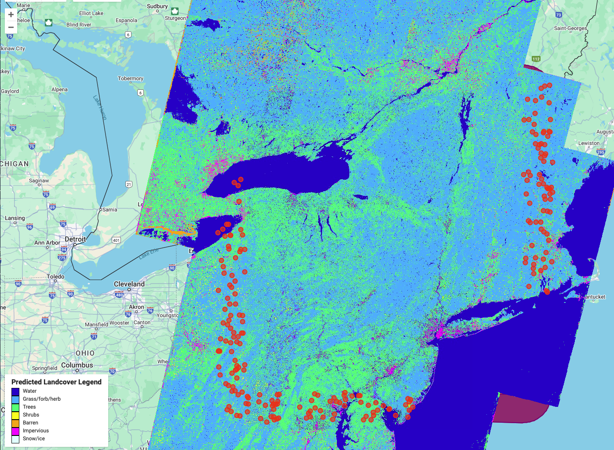
Performance Evaluation
\[ \begin{array}{|l|c|c|c|c|} \hline \textbf{Landcover Type} & \textbf{Misclassifications} & \textbf{Misclassification Rate} & \textbf{Precision} & \textbf{Recall} \\ \hline \text{Water} & 2 & 0.10 & 0.9 & 0.9 \\ \hline \text{Grass/forb/herb} & 26 & 0.18 & 0.85 & 0.82 \\ \hline \text{Trees} & 22 & 0.43 & 0.52 & 0.56 \\ \hline \text{Shrubs} & 3 & 1.0 & 0.0 & 0.0 \\ \hline \text{Barren} & 1 & 1.0 & 0.0 & 0.0 \\ \hline \text{Impervious} & 4 & 0.8 & 0.25 & 0.20 \\ \hline \end{array} \]
The enhanced CART model achieved an overall accuracy of 73.84% and a Kappa \(\kappa\) coefficient of 0.52, signifying a moderate level of agreement beyond chance between the predicted and actual classifications. The classifier incorrectly classified 72 out of 241 test observations, corresponding to a 29% misclassification rate. The confusion matrix revealed that the model performed very well in identifying “Water” and “Grass/Forb/Herb” classes, with minimal misclassifications in these categories. However, challenges persisted in accurately classifying “Trees,” “Shrubs,” and “Impervious” surfaces. Specifically, “Trees” were frequently misclassified as “Grass/Forb/Herb,” while “Shrubs” and “Impervious” surfaces exhibited high misclassification rates, often being confused with other vegetative classes or incorrectly identified as “Barren.” It should be noted that “Snow/Ice” was not included in the training set because no “Snow/Ice” labels existed in NY.
These results underscore the inherent limitations of single decision tree models like CART in handling complex, multi-class classification tasks, particularly in scenarios characterized by class imbalance and spectral similarity among land cover types. The propensity for overfitting, as evidenced by high misclassification rates in certain classes, highlights the need for more sophisticated ensemble methods to enhance classification accuracy and robustness by capturing non-linear relationships and interactions more effectively by using multiple decision trees.
Random Forests
Random Forests, a popular ensemble learning method, address these limitations by constructing multiple decision trees and aggregating their predictions to improve accuracy and robustness. Unlike linear models, Random Forests can naturally handle multicollinearity, complex decision boundaries, and interactions between predictors without requiring explicit feature engineering.
Assumptions:
Random Forests are non-parametric models that make no assumptions about the functional relationship between the predictors and the outcome variable. This flexibility allows them to capture both non-linearities and hierarchical feature relationships effectively. Additionally, Random Forests are robust to overfitting due to their bagging (bootstrap aggregation) strategy, where each tree is trained on a random subset of the data, and only a random subset of predictors is considered at each split. Out-of-bag (OOB) error, a unique feature of Random Forests, provides an internal measure of model performance without requiring a separate validation dataset, thus maximizing data utilization.
Model Specification:
Random Forests extend the CART algorithm by building an ensemble of decision trees, each trained on a bootstrapped sample of the data and using a random subset of predictors at each split.
For a dataset \(D\) with \(n\) observations, each tree in the Random Forest is trained on a bootstrapped sample \(D^*\), which is a random sample of \(n\) observations drawn with replacement.
At each split in a tree:
- A random subset \(m\) of total $p$ predictors is selected (\(m << p\)).
- The split that minimizes the impurity criterion (e.g. Gini index) is chosen.
For classification, the final class prediction is determined by the majority vote across all trees:
\[ \hat{y} = \text{argmax}c \left( \frac{1}{T} \sum_{t=1}^T I_{f_t(x) = c} \right), \]where \(f_t(x)\) is the prediction of the \(t^{th}\) tree and \(T\) is the total number of trees in the forest.
The out-of-bag error (from the samples not included in the bootstrapped dataset) is used to provide an unbiased estimate of model performance without needing a separate test set.
Implementation:
The Random Forest model was implemented with the same predictors as those used in the original multinomial logistic regression model. Hyperparameter tuning was performed to optimize three key parameters:
Number of Trees (
num_trees): The total number of decision trees in the ensemble. We tested values: 50 and 100.Features per Split (
mtry): The number of predictors randomly sampled at each node split. We tested values: 2, 4, and 6.Maximum Tree Depth (
max_depth): The maximum depth allowed for each decision tree. We tested values: 10, 15, and 20.
A grid search approach was used to systematically evaluate all combinations of these hyperparameters. For each combination, the Random Forest was trained using bootstrap sampling, and the Out-of-Bag (OOB) error was recorded as a measure of predictive performance. The table below summarizes the results of the grid search, highlighting the combination of hyperparameters that minimized the OOB error.
\[ \begin{array}{|l|c|c|c|c|} \hline \textbf{Number of Trees} & \textbf{Features per Split (mtry)} & \textbf{Max Depth} & \textbf{OOB Error} \\ \hline 50 & 2 & 10 & 0.2820 \\ \hline 100 & 2 & 10 & 0.2812 \\ \hline 50 & 4 & 10 & 0.2750 \\ \hline 100 & 4 & 10 & 0.2746 \\ \hline 50 & 6 & 10 & 0.2744 \\ \hline 100 & 6 & 10 & 0.2744 \\ \hline 50 & 2 & 15 & 0.2756 \\ \hline 100 & 2 & 15 & 0.2745 \\ \hline 50 & 4 & 15 & 0.2664 \\ \hline 100 & 4 & 15 & 0.2659 \\ \hline 50 & 6 & 15 & 0.2659 \\ \hline 100 & 6 & 15 & 0.2654 \\ \hline 50 & 2 & 20 & 0.2749 \\ \hline 100 & 2 & 20 & 0.2737 \\ \hline 50 & 4 & 20 & 0.2640 \\ \hline \textbf{100} & \textbf{4} & \textbf{20} & \textbf{0.2631} \\ \hline 50 & 6 & 20 & 0.2645 \\ \hline 100 & 6 & 20 & 0.2636 \\ \hline \end{array} \]
The results show that the optimal hyperparameters are 100 trees, 4 features per split (mtry), and a maximum depth of 20, which achieved the lowest OOB error of 0.2631. Increasing the number of trees from 50 to 100 consistently led to slight improvements in performance, particularly for deeper trees (max depth = 20), as it reduced the variance of the ensemble. The choice of mtry = 4 balanced the trade-off between introducing randomness and maintaining sufficient feature relevance at each split. The values tested were determined in line with our limited computational power.
Performance Evaluation:
Using the optimal hyperparameters, the final Random Forest model was trained on the entire dataset. The performance of the model was evaluated using the same metrics as the multinomial logistic regression, including precision, recall, F1-score, and balanced accuracy for each land cover class. These metrics allow for a direct comparison with the previous models and provide insights into the Random Forest’s ability to handle underrepresented classes and complex relationships between predictors. Additionally, variable importance measures were derived to identify the most influential predictors contributing to classification performance.
\[ \begin{array}{|l|c|c|c|c|} \hline \textbf{Class} & \textbf{Precision} & \textbf{Recall} & \textbf{F1} & \textbf{Balanced Accuracy} \\ \hline \textbf{Barren} & 0.9713 & 0.9860 & 0.9786 & 0.9923 \\ \hline \textbf{Grass/Forb/Herb} & 0.7364 & 0.8842 & 0.8036 & 0.8112 \\ \hline \textbf{Impervious} & 0.9074 & 0.9379 & 0.9224 & 0.9684 \\ \hline \textbf{Shrubs} & 0.9621 & 0.1404 & 0.2450 & 0.5700 \\ \hline \textbf{Snow/Ice} & 1.0000 & 0.9471 & 0.9729 & 0.9736 \\ \hline \textbf{Trees} & 0.7961 & 0.7450 & 0.7697 & 0.8277 \\ \hline \textbf{Water} & 0.9963 & 0.9849 & 0.9906 & 0.9923 \\ \hline \textbf{Macro Averaged} & \textbf{0.9099} & \textbf{0.8037} & \textbf{0.8118} & \textbf{0.8765} \\ \hline \end{array} \]
The Random Forest model demonstrates significant advancements over the previous approaches, effectively addressing key limitations such as class imbalance, non-linear relationships, and feature interactions. By leveraging ensemble learning, Random Forests construct multiple decision trees, enabling the model to capture complex patterns and decision boundaries that were inaccessible to linear models. This flexibility is particularly beneficial for remote sensing data, where spectral, spatial, and temporal relationships are inherently non-linear and often exhibit overlapping class distributions.
The model’s performance highlights its strengths in accurately classifying dominant land cover classes as well as improving results for underrepresented categories, especially relative to the baseline multinomial logistic regression models. For classes such as “Water”, “Barren”, and “Impervious”, the Random Forest achieves near-perfect classification, with F1-scores exceeding 0.92. Specifically, “Water” achieves a precision of 0.996 and recall of 0.985, reflecting the model’s ability to distinguish spectrally distinct classes with high confidence. This improvement extends to minority classes that were poorly handled by the multinomial regression models. For example, the “Snow/Ice” class, which previously exhibited an F1-score as low as 0.07, now achieves a robust 0.973, driven by a recall of 0.947. Such gains indicate the model’s capacity to capture subtle seasonal and spectral signals associated with this class. Similarly, the “Shrubs” class, which remained nearly undetected in previous models, now achieves an F1-score of 0.245, although challenges persist with its relatively low recall of 0.140. This partial improvement can be attributed to the spectral overlap between “Shrubs” and other vegetated classes such as “Grass/Forb/Herb” and “Trees”, highlighting a persistent difficulty in resolving spectrally similar land cover types.
The macro-averaged performance metrics further underscore the Random Forest model’s effectiveness. With a precision of 0.910, recall of 0.804, and F1-score of 0.812, the Random Forest significantly outperforms the multinomial models. The balanced accuracy of 0.877 indicates that the model achieves reliable classification performance across all classes, mitigating the biases observed previously where dominant classes were disproportionately favored. These results demonstrate the Random Forest’s robustness to class imbalance and its ability to generalize well across diverse land cover categories.
Interpretation:

The variable importance analysis provides additional insights into the predictors driving model performance. The Vegetation Indicator (Veg) emerges as the most influential variable, followed closely by Elevation and NDVI, reinforcing their ecological relevance in distinguishing between vegetated and non-vegetated classes. Principal components (PC1, PC2), derived previously through dimensionality reduction, also exhibit high importance, validating their role in summarizing the spectral information from the original bands. Spatial features such as North/South and temporal predictors like Season contribute somewhat, although to a much lesser extent.
Appropriateness:
The Random Forest model proves highly appropriate for the land cover classification task, given the complex nature of the data, which includes non-linear relationships, overlapping class boundaries, and interactions among predictors. Unlike linear models, Random Forests make no assumptions about the underlying data structure, allowing them to effectively capture the non-linear and hierarchical patterns often inherent in remote sensing datasets. The ability of Random Forests to incorporate a wide range of predictors—spectral bands, elevation, NDVI, spatial, and temporal variables—further demonstrates their suitability for this problem. Though robust to multicollinearity, we included the principal components of the spectral bands instead of the bands themselves for computational efficiency.
The performance evaluation of the Random Forest provides strong evidence of its predictive ability and fit for this data. The model achieves significant improvements across precision, recall, F1-score, and balanced accuracy, particularly for minority and previously underperforming classes. The macro-averaged F1-score of 0.812 and balanced accuracy of 0.877 highlight the model’s ability to generalize across all land cover categories, effectively addressing the class imbalance that hampered multinomial logistic regression. Dominant classes such as “Water” and “Barren” maintain near-perfect classification, while substantial improvements for “Snow/Ice” validate the model’s capacity to handle underrepresented and spectrally ambiguous classes. These measures of fit underscore the Random Forest’s superior predictive performance and adaptability to complex classification tasks.
Despite its strong predictive ability, interpretability remains a key limitation of the Random Forest model. While linear models like multinomial regression provide explicit coefficients that quantify the effect of each predictor, Random Forests operate as an ensemble of decision trees, making it difficult to trace specific decision-making pathways. Variable importance measures offer a high-level understanding of predictor relevance, as seen with Veg, Elevation, and NDVI emerging as critical variables; however, they do not provide insights into the specific relationships or interactions driving individual predictions. This complexity poses challenges when explaining the model to non-technical audiences, as the lack of clear, interpretable coefficients limits transparency. For technical audiences, the variable importance plots and performance metrics offer valuable insights but require familiarity with ensemble methods to fully appreciate the results.
The computational demands of Random Forests further contribute to their trade-offs. The hyperparameter tuning process, involving grid search over combinations of tree count, feature sampling, and tree depth, increases training time, particularly for large datasets. However, the resulting improvements in performance justify this computational cost. Moreover, the ability to measure out-of-bag error during training maximizes data utilization and reduces the need for an additional validation set, which is particularly advantageous for resource-constrained settings.
Overall, the Random Forest model is highly appropriate for this land cover classification problem, excelling in addressing non-linear relationships, class imbalance, and complex feature interactions without requiring stringent assumptions about the data. Its strong performance metrics affirm its predictive ability and robustness, making it a powerful tool for remote sensing applications. However, the limited interpretability of the model and its computational intensity present challenges for transparency and communication, particularly for non-technical stakeholders.
Comparative Analysis
Comparing the three models—Multinomial Logistic Regression, CART, and Random Forests—reveals a clear progression in performance and capability. The MLR model serves as a baseline, demonstrating strong performance for dominant classes but faltering on underrepresented and spectrally similar categories due to its linear assumptions and inability to handle complex interactions. The initial CART model offers improved handling of non-linear relationships but still struggles with class imbalance and overlapping spectral signatures, particularly evident in the poor performance on “Shrubs” and “Snow/Ice.”
Random Forests emerge as the superior model, effectively addressing the limitations of both MLR and CART by leveraging ensemble learning to capture non-linear relationships and interactions among predictors. RF significantly enhances classification accuracy across all classes, especially for those that were previously underrepresented or spectrally ambiguous. The variable importance analysis further validates the model’s ecological relevance, highlighting key predictors such as Veg, Elevation, and NDVI.
Despite its strengths, Random Forests present challenges in interpretability, as the ensemble nature of the model obscures the decision-making pathways inherent in individual trees. While variable importance provides a high-level understanding of predictor relevance, it lacks the explicit coefficient-based interpretability of MLR. Additionally, the computational intensity of training RF models, particularly with extensive hyperparameter tuning, demands significant computational resources.
In conclusion, while Multinomial Logistic Regression and CART offer valuable insights and interpretability, Random Forests provide a more robust and accurate solution for land cover classification in complex, multi-class scenarios characterized by class imbalance and overlapping spectral features. The superior performance of Random Forests aligns with the central research objective of achieving accurate and reliable land cover classification using satellite-derived predictors.
Conclusions and Recommendations
This comprehensive study undertook an in-depth exploration and modeling of land cover classification using satellite-derived predictors, integrating both data exploration and advanced machine learning techniques. The data exploration phase revealed significant class imbalances, with dominant classes such as “Grass/Forb/Herb” and “Trees” comprising over three-quarters of the observations, while classes like “Snow/Ice” and “Impervious” were markedly underrepresented. Additionally, the analysis of spectral bands and NDVI highlighted substantial collinearity among visible bands and overlapping distributions across certain land cover types, underscoring the complexity inherent in accurately distinguishing between spectrally similar classes. Temporal and spatial analyses further elucidated seasonal trends and geographic patterns that influenced vegetation dynamics and land cover distribution.
In the modeling phase, Multinomial Logistic Regression (MLR) served as a baseline, demonstrating adequate performance for dominant classes but struggling with underrepresented and spectrally similar categories due to its linear assumptions and inability to capture complex interactions. The initial Classification and Regression Trees (CART) model mirrored these limitations when applied broadly across the dataset. However, a geographically tailored CART model for New York exhibited improved accuracy and a higher Kappa coefficient, indicating better performance within a more homogeneous region but still facing challenges with certain classes. In stark contrast, with a macro-averaged F1-score of 0.812 and balanced accuracy of 0.877, Random Forests (RF) emerged as the superior model, significantly enhancing classification accuracy across all classes, including those previously underrepresented or spectrally ambiguous. The RF model’s robust performance is attributed to its ensemble nature, which adeptly handles class imbalance and captures non-linear relationships among predictors. Furthermore, variable importance analysis from the RF model corroborated the ecological relevance of key predictors such as vegetation indicators, elevation, and NDVI, aligning with insights gleaned from the data exploration phase.
Recommendations
Building upon the insights gained from both data exploration and modeling, several strategic recommendations are proposed to further enhance land cover classification accuracy and robustness.
Firstly, addressing the pronounced class imbalance is paramount. The data exploration highlighted the dominance of certain classes, which adversely affected the model’s ability to accurately classify minority classes. Implementing advanced techniques such as Synthetic Minority Over-sampling Technique (SMOTE) or cost-sensitive learning within the Random Forest framework can mitigate this imbalance, ensuring that underrepresented classes receive adequate representation during training. Additionally, leveraging feature engineering enhancements by incorporating spatial aggregates or temporal lags can capture neighborhood effects and temporal dependencies more effectively, thereby enriching the predictor set and enhancing model performance.
Secondly, the high collinearity observed among spectral bands necessitates the application of dimensionality reduction techniques beyond Principal Component Analysis (PCA). Exploring methods such as t-distributed Stochastic Neighbor Embedding (t-SNE) or Uniform Manifold Approximation and Projection (UMAP) could uncover latent structures within the data, reducing redundancy while preserving essential spectral information. This approach aligns with the data exploration findings, which emphasized the need to consolidate highly correlated spectral bands to improve model efficiency and interpretability. Linear dimensionality reduction was only the surface of applications in this area.
Moreover, enhancing model interpretability remains a critical consideration, particularly when communicating results to non-technical stakeholders. While Random Forests offer superior predictive performance, their ensemble nature complicates the extraction of explicit decision pathways. Integrating interpretability tools such as SHapley Additive exPlanations (SHAP) or Partial Dependence Plots (PDP) can bridge this gap, providing clear insights into how individual predictors influence class predictions. This aligns with the data exploration phase’s emphasis on understanding predictor relationships, ensuring that model insights are both actionable and transparent.
Lastly, optimizing computational efficiency is essential, especially given the substantial computational resources required for hyperparameter tuning in ensemble models. Adopting parallel processing capabilities or more efficient implementations of Random Forests can enhance scalability and reduce training times, facilitating the application of these models to larger and more diverse datasets as identified during the data exploration phase.
Future Work and Improvement
Future research should focus on expanding and refining the current modeling framework to further elevate land cover classification accuracy and operational utility. One promising avenue is the exploration of more advanced ensemble methods, such as Gradient Boosting Machines or Extreme Gradient Boosting, which may offer incremental performance enhancements over Random Forests by better capturing intricate patterns and interactions within the data. Additionally, the integration of deep learning architectures, such as Convolutional Neural Networks (CNNs), holds potential for leveraging spatial hierarchies and patterns inherent in remote sensing imagery, thereby improving classification performance for complex and heterogeneous land cover types.
Further, incorporating additional data sources, such as LiDAR-derived elevation metrics or higher-resolution temporal data, can provide a more comprehensive feature set that enhances model robustness and accuracy. This aligns with the data exploration findings that underscored the importance of diverse predictors in capturing the multifaceted nature of land cover dynamics. Spatial-temporal modeling techniques that explicitly account for both spatial dependencies and temporal dynamics should also be developed, potentially leveraging frameworks like Spatio-Temporal Random Forests or integrating Geographic Information System methodologies to better model the inherent spatio-temporal structure of the data.
Enhanced feature selection and dimensionality reduction methods should be pursued to uncover latent structures within the data that may improve classification performance. Techniques such as feature importance ranking, recursive feature elimination, or embedding-based methods can identify and retain the most informative predictors, reducing model complexity and enhancing interpretability. Moreover, assessing the generalizability of the developed models across different geographic regions and temporal periods is crucial. Employing transfer learning techniques to adapt models trained on one region to new, unseen regions with minimal retraining can significantly expand the applicability and scalability of the classification framework.
Future work can significantly advance the state-of-the-art in land cover classification, providing more accurate, interpretable, and scalable solutions essential for effective environmental management and decision-making.
References
Hastie, T., Tibshirani, R., & Friedman, J. (2009). The elements of statistical learning: Data mining, inference, and prediction (2nd ed.). New York: Springer. DOI: 10.1007/978-0-387-84858-7
U.S. Geological Survey. (n.d.). Land Change Monitoring, Assessment, and Projection (LCMAP). U.S. Department of the Interior. Retrieved from https://www.usgs.gov/special-topics/lcmap